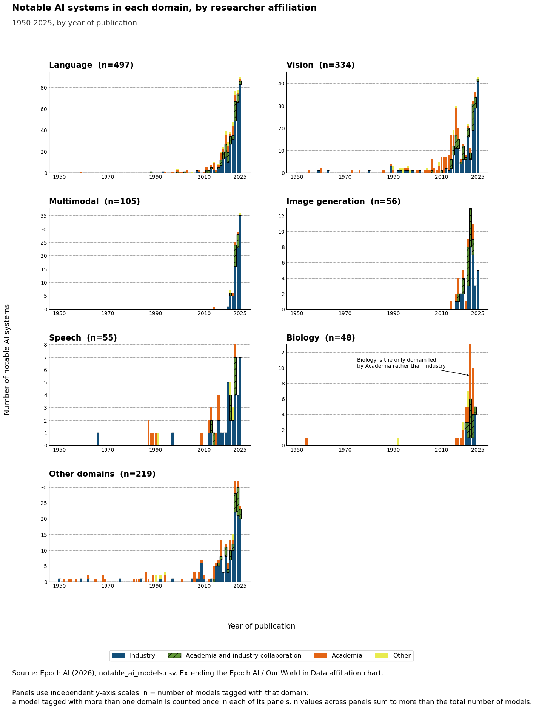

This exercise was about taking a chart I had already built and making it multivariate. I went back to the AI affiliation chart from Module 5 and 6 and added Domain as a fourth variable, splitting it into small multiples so each AI application area gets its own panel.
Choosing Domain as the Fourth Variable
The Module 5/6 chart already had three variables mapped through standard aesthetics: Year on the x axis, Count of AI systems on the y axis, and Affiliation through colour and stacking. I picked faceting, breaking the chart into small multiples.
The raw Epoch AI dataset lets a model carry more than one Domain tag, and there are 19 different tags in total. Before deciding which ones deserved their own panel I counted how often each tag actually appears. Language, Vision, Multimodal, Image generation and Speech came out as the top 5 by frequency. Games was actually 6th, just ahead of Biology, but I kept Biology instead once I checked the affiliation totals for every domain and found it was the only one where Academia outnumbers Industry.
The Multivariate Chart

What I Did
I built this using pandas and matplotlib, but switched to Epoch AI's raw notable_ai_models.csv instead of the pre aggregated Our World in Data file, since the OWID version doesn't include a Domain column. Year of publication and the Industry, Academia, Academia and industry collaboration, Other affiliation categories were carried over unchanged.
Because a model can carry more than one Domain tag, I split each model into one row per tag because it gets counted once in every panel it belongs to, rather than only once overall. That is also why the panel counts (n=) add up to more than the number of models in the dataset.
Data Card
| Title | Notable AI systems in each domain, by researcher affiliation |
|---|---|
| Summary | Small multiple charts consisting 7 panels. One for each of the 7 AI domains (Language, Vision, Multimodal, Image Generation, Speech, Biology, Others). Biology is the only domain where Academia surpass Industry. The chart in each panel is a stacked bar chart that shows the AI systems invented each year from 1950 to 2025. OWID visualization consists of three variables(year, number of AI systems, and Affiliation). Added variable is Domain to make this visualization multivariate. |
| Data Sources |
Epoch AI. (2026). Data on AI models [Data set]. Epoch AI. https://epoch.ai/data/ai-models?view=graph&tab=notable Our World in Data. (2025, March 12). Affiliation of research teams building notable AI systems by year of publication. Our World in Data . https://ourworldindata.org/grapher/affiliation-researchers-building-artificial-intelligence-systems-all |
| Mapping |
|
| Important Notes |
|
| Access |
Table: view directly on Epoch AI's Data on AI Models page https://epoch.ai/data/ai-models?view=table&tab=notable CSV file: notable_ai_models.csv downloadable (Epoch AI) https://epoch.ai/data/ai_models.zip |
References
- Epoch AI. (2026). Data on AI models [Data set]. Epoch AI.
https://epoch.ai/data/ai-models?view=graph&tab=notable - Our World in Data. (2025, March 12). Affiliation of research teams building notable AI systems by year of
publication. Our World in Data .
https://ourworldindata.org/grapher/affiliation-researchers-building-artificial-intelligence-systems-all